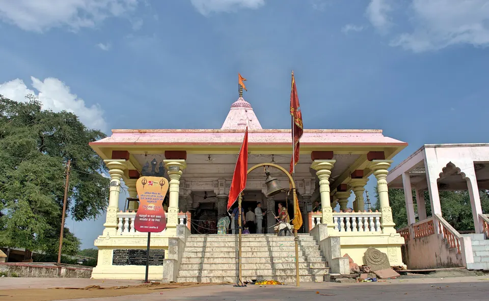
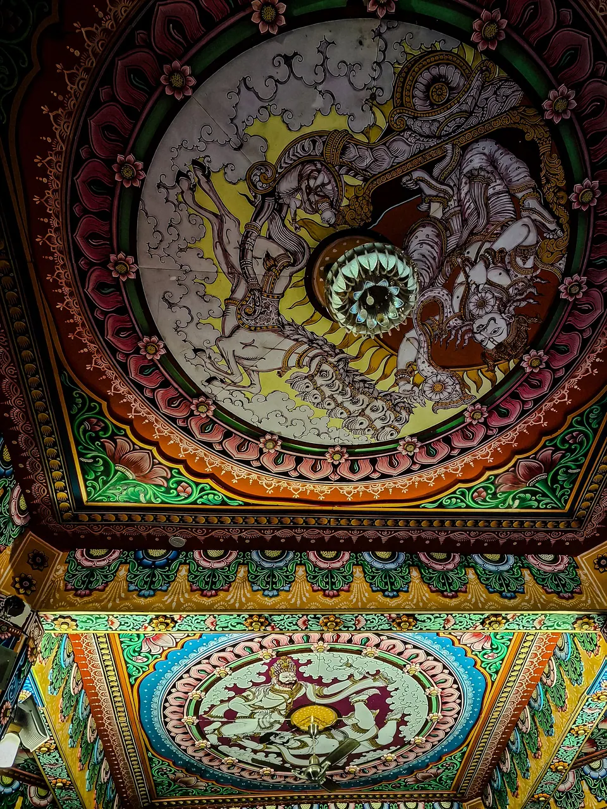
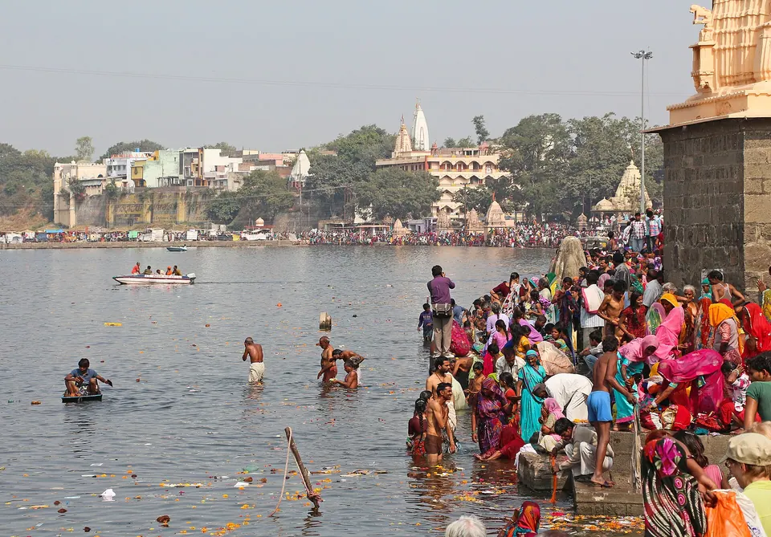
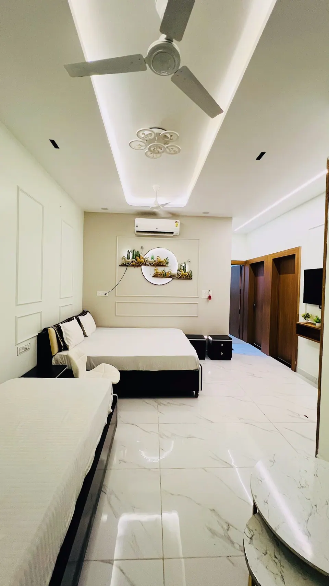
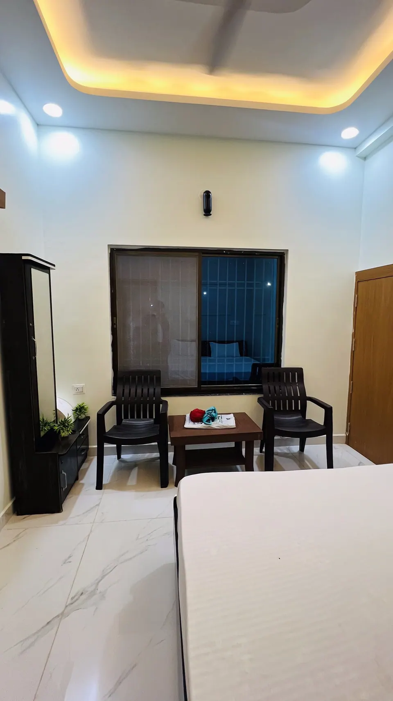

Ujjain in 2 Days: A Pilgrim Family Itinerary (Winter 2026)

Two days are enough to do Ujjain properly as a family: Mahakaleshwar darshan, the Mahakal Lok corridor and the old-city temples on day one, then Kal Bhairav, Sandipani Ashram, Mangalnath and the evening aarti at Ram Ghat on day two. Keep the outer temples together in one half-day, and leave the afternoons free for rest.
Most families write to us with the same question: "We have only two days. What should we not miss?" We have helped many pilgrim families plan this, often with grandparents and young children along. Below is the plan we would share with our own parents: unhurried, with a rest in the middle of each day. For the temple's own schedule, see our Mahakaleshwar darshan timings guide.
How to plan two days in Ujjain
Ujjain is a small city, but the sacred places lie in two clusters. The old-city cluster sits around Mahakaleshwar Temple, and the outer temples are a few kilometres away: Kal Bhairav is about 5 km from Mahakaleshwar, Sandipani Ashram about 5 km, Mangalnath about 6 km and Chintaman Ganesh about 7 km, according to our guide to ten sacred places beyond Mahakaleshwar. Grouping them by cluster saves hours in the car.
Three rules make the plan work. Do the heaviest walking in the cool hours. Rest between lunch and 4 PM. And keep one evening for the river, not for a queue.

Before you start: the winter timings
The temple's daily routine changes by tradition twice a year. Local reports of 24 October 2026 give the winter schedule from 27 October: Dadhyodak aarti at 7:30 AM, Bhog aarti at 10:30 AM and Sandhya aarti at 6:30 PM, with Bhasma aarti (4 to 6 AM) and Shayan aarti (10:30 to 11 PM) unchanged (Dainik Bhaskar). Our winter aarti timings post explains the shift in detail.
Because the Sandhya aarti is now at 6:30 PM, we have built day one around reaching the temple area earlier in the evening than older guides suggest.
Day 1: Mahakal, Mahakal Lok and the old city
Morning: darshan at Mahakaleshwar
If you have booked the Bhasma aarti, go as the temple directs and return to rest afterwards; our Bhasma aarti booking guide has the steps. Families who prefer a gentler start can take general darshan around the Bhog aarti at 10:30 AM, after a warm breakfast. The temple sets its own entry and booking rules, so please follow the staff and its official site.
Late morning: Mahakal Lok
The corridor is free to walk and opens from 6 AM, with the last entry at 10 PM before the Shayan aarti (MP Tourism). Our Mahakal Lok visit guide covers the gates and what to see. The Triveni Museum outside the corridor is open 8 AM to 10 PM, closed on Tuesdays and government holidays, with a ticket of ₹20 for Indian citizens (same source). It is a cool, seated stop if the sun is strong.
Afternoon: lunch and rest
Go back to your stay for lunch and a proper rest. This is the single habit that keeps grandparents cheerful on day two.
Evening: Harsiddhi and the lamp towers
Harsiddhi Temple is a Shaktipeeth in the old city, known for its tall lamp towers lit at dusk. We have written a full Harsiddhi temple guide with the evening deepmala details. Choose either the Sandhya aarti at Mahakal or the lamp lighting at Harsiddhi as the main event of the evening, and see the other briefly or on another day.

Day 2: Kal Bhairav, Sandipani Ashram and Mangalnath
Early morning: Kal Bhairav
Kal Bhairav is considered the guardian of the city, and many families visit it before or after Mahakal darshan. The temple administration gives its timings as 6:30 AM to 9:30 PM, and a ₹500 quick darshan ticket is sold at a counter outside (Dainik Bhaskar). Arrive between 6:30 and 8 AM for a shorter queue. Our Kal Bhairav guide explains the offerings, which are optional.
Mid-morning: Sandipani Ashram
This is the gurukul where, by tradition, Krishna, Balarama and Sudama studied under Sage Sandipani. It is a gentle stop that children enjoy, because the stories come alive in the courtyard. Allow about an hour.

Noon: Mangalnath or a rest
Mangalnath, on the Shipra, is traditionally associated with Mars and sought out by devotees with Mangal Dosha concerns. It is busier on Tuesdays. If anyone is tired, skip it and head back for lunch; no temple list should cost your family its comfort.
Evening: Ram Ghat on the Shipra
Ram Ghat is a bathing ghat on the Shipra known for its evening aarti, according to MP Tourism (link above). The exact hour changes with the season, so ask your caretaker that afternoon. Sit on the steps, light a diya if your family wishes, and let the day settle.

Watch before you go: Mahakal Lok, Harsiddhi and the temple online
A few minutes of video helps elders picture the walking distances. These are independent creators' videos, not ours and not the temple's, so fares and timings are as they were on the day they filmed.
- ▶ Walk through the Mahakal Lok corridor YouTube · Travel With Bhavesh. The 900-metre corridor, its two grand gateways and the murals along the way.
- ▶ A spiritual journey to Mahakal Lok YouTube · vs study. The corridor at sunset, and the Shipra ghats in the evening.
- ▶ Harsiddhi Mata Temple Ujjain: diya aarti YouTube · Distance covered. A 12-minute temple visit from 2026.
- ▶ Official live darshan Shri Mahakaleshwar Temple website. Watch the aarti live from home.
If you have a third day, or want Omkareshwar
Omkareshwar is the other Jyotirlinga of Madhya Pradesh. It is better as its own day, not squeezed into a two-day trip. Our Omkareshwar guide puts it at about 78 km, around 2 hours each way, and our indicative round-trip by SUV is ₹5,500 (WhatsApp us for a confirmed quote). Some other plans list a longer drive, so allow generous time. For routes and day trips, see our travel page.
What to carry and how to pace it
- Light cotton clothes, a shawl for early mornings and evenings in winter, and easy footwear you can remove quickly.
- Water, a small snack for children, and any medicines for elders.
- Phones and cameras are not allowed inside the Mahakal sanctum, so plan where to leave them before darshan.
- Small notes for offerings and short rides.
Festival days, Tuesdays at Mangalnath and Mondays at Mahakal are busier. If you can choose dates, a winter weekday is kind to everyone. If you want help shaping the plan, our contact page has our details.
Where to stay near Mahakaleshwar for this itinerary
All five of our villas are within 2 km of Mahakaleshwar Jyotirlinga, and in-house guests get a complimentary Mahakal shuttle (up to 5 guests per trip). That makes the midday rest on both days a short ride away, not a long wait in a queue.
Rudrangan Suites



Opened in 2026, Rudrangan Suites has designer finishes and garden seating. It has 3 bedrooms, sleeps 6 and starts from ₹5,200 per night. It is air-conditioned, wheelchair friendly, has a lift, and welcomes pets. The kitchen has an induction cooktop, handy for a cup of tea between the morning and evening outings. Check-in is from 10:30 AM and check-out is at 9:30 AM, with a later check-out possible on request.
For other groups: Divinestay (3 bedrooms, sleeps 8, from ₹5,500) suits three generations, and AP Suite (2 bedrooms, sleeps 4, from ₹4,200) suits couples. See them all on our villas page. Our caretaker also explains the Bhasma Aarti booking process on your arrival evening; the temple permit itself is booked by you.
Frequently asked questions
Is two days enough for Ujjain?
Yes, for a calm family pilgrimage. Two days cover Mahakaleshwar darshan, Mahakal Lok, Kal Bhairav, Harsiddhi, Sandipani Ashram, Mangalnath and an evening at Ram Ghat if you pace them sensibly. Add a third day if you want Omkareshwar without hurrying, or if you are travelling with several elders.
What is the best order to see Ujjain's temples?
Many families visit Mahakaleshwar first and Kal Bhairav afterwards, a belief repeated in local guides, though neither order is a temple rule. Group places by direction: the old city (Mahakal, Mahakal Lok, Harsiddhi) on day one, and the outer temples (Kal Bhairav, Sandipani Ashram, Mangalnath) together on day two.
What are the Mahakal aarti timings in winter 2026?
From 27 October 2026, local reports give the Dadhyodak aarti at 7:30 AM, the Bhog aarti at 10:30 AM and the Sandhya aarti at 6:30 PM. Bhasma aarti stays at 4 to 6 AM and Shayan aarti at 10:30 to 11 PM. The temple can change these, so please check its official site before you travel.
Do I need a car or taxi for this itinerary?
For the old-city places near Mahakaleshwar you can walk or take short rides. The outer temples such as Kal Bhairav, Sandipani Ashram and Mangalnath are a few kilometres apart, so a taxi or auto for the half day is easier with elders. Our caretaker can help arrange a driver; fares are quoted on WhatsApp.
Can I add Omkareshwar to a 2-day Ujjain trip?
It is better as a separate day. Omkareshwar is about 78 km from Ujjain, a drive of around 2 hours each way by our earlier guide, and families usually spend 4 to 5 hours there. If you only have two days, keep Ujjain unhurried and plan Omkareshwar for your next visit, or add a third day.
Sources
- Dainik Bhaskar: Mahakaleshwar aarti timing change (24 October 2026)
- MP Tourism: Mahakal Lok Corridor, Ujjain
- Dainik Bhaskar English: Kal Bhairav temple ₹500 quick darshan
- Ujjain Darshan: Ujjain tour plan with 1-day and 2-day itineraries
- Shri Mahakaleshwar Temple: live darshan
Timings, prices and dates change, especially on festival days. Please verify before you travel with the official temple or government site.
If you tell us your dates and who is travelling, we will suggest which of these stops to keep and which to leave for next time. We would be glad to host you.
— Apoorv, Founder, AP Villas & Resorts